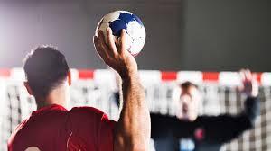

el balonmano
es un deporte de pelota en el que se enfrentan dos equipos, se caracteriza por transportar la pelota con las manos. Cada equipo se compone de 7 jugadores (6 de campo y un portero), pudiendo el equipo contar con otros 7 jugadores (o menos, o ninguno) y hasta 9 reservas en competiciones oficiales que pueden intercambiarse en cualquier momento con sus compañeros. Se juega en un campo rectangular, con una portería a cada lado del campo. El objetivo del juego es desplazar una pelota a través del campo, valiéndose fundamentalmente de las manos, para intentar introducirla dentro de la portería contraria, acción que se denomina gol. El equipo que marque más goles al concluir el partido, que consta de dos partes de treinta minutos, es el que resulta ganador, pudiendo darse también el empate.
historia y origen
Origen del balonmano Para conocer el origen del balonmano, los historiadores buscan juegos parecidos o similitudes en deportes de la Antigua Grecia o del Imperio Romano. Algunos juegos de la Antigüedad se parecen bastante, pero los dibujos y grabados solo nos muestran gente jugando a la pelota con las manos.
cómo nace el balonmano
De varios estudios realizados se deduce que ya en las primeras civilizaciones podía utilizar la agilidad de sus manos en los juegos o divertimentos. En cualquier caso, se conoce que en la antigua Grecia se practicaba el «juego de urania». En él se empleaba una pequeña pelota del tamaño de una naranja que debía permanecer en el aire el máximo de tiempo posible.
Del mismo modo, en la Antigua Roma, alrededor del año 150 a. C. se practicaba un juego llamado “Harpaston”. En él se debía pasar y mover un balón con las manos.
Llegada la Edad Media, encontramos un antecesor del balonmano. Se trataba del denominado «juego de la pelota» o “primer juego del verano”, y se trataba de atrapar la pelota en pleno vuelo de un modo muy similar a como hacen los jugadores de balonmano actual.
La primera noción de algo parecido al balonmano actual tuvo que esperar a 1898 en Dinamarca, donde se practicaba el haanhold y donde Holger Nielsen inventó unas normas muy parecidas a las actuales en 1898.
Explore